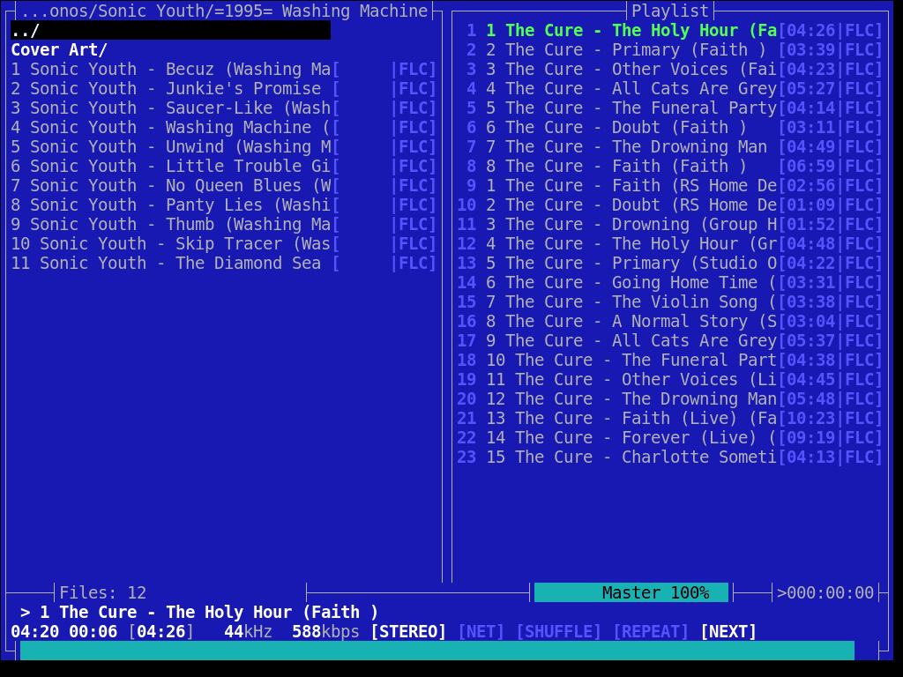
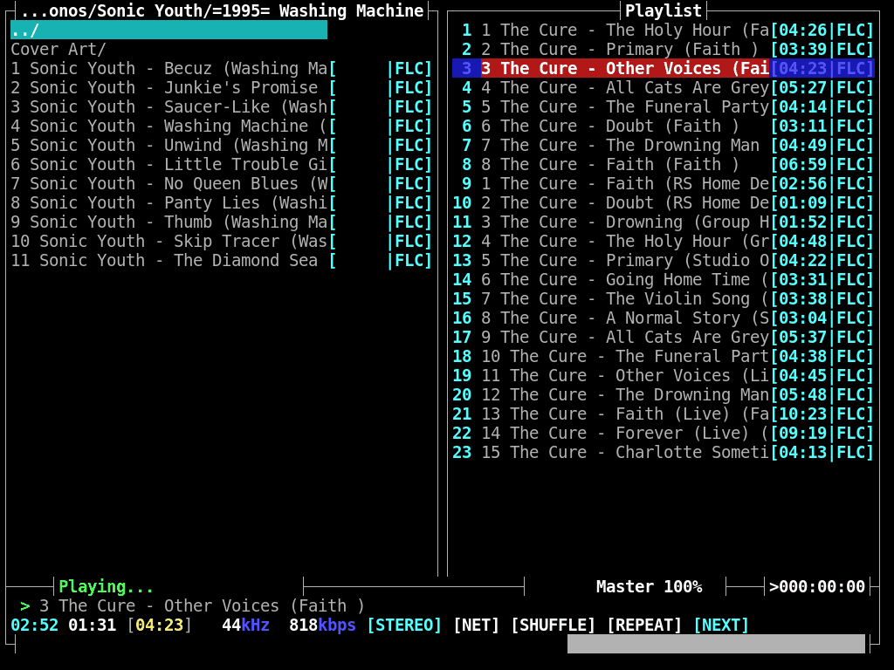

En GNU existe una cantidad ridicula de reproductores de audio, por participar hasta el vlc o video (gnome) se meten en esos temas.
En general este tipo de aplicaciones te piden una carpeta “especial” donde coloques la musica y luego exitienden sus tentaculos para optener portadas, letras, titulos, generar listas de reproduccion por autor/mas escuchados/genero, y un sin numero mas de caracteristicas que incluyen conectarse a la red, claro mientras te roban un espacio con una interfaz de lo mas mona, pensada para mover el raton de un lado a otro…
si por el contrario, el album es tu lista de reproduccion, la carpeta con el nombre del grupo el unico metadato que necesitas y mover la mano con el raton no te genera ningun placer, existe moc (Music On Console) un eficiente reproductor de todo tipo de ficheros de audio desde la consola, con una interfaz tipo “navegador de ficheros”.
si tienes una distro descente (como debian) estara en los repositorios, en el caso de freidora la encontraras en rpm-fusion, instalarla no cuesta nada
gestor-de-pagetes install moc
para ejecutarla simplemente escribimos mocp en la consola (en freidora por
alguna obscura razon primero tenemos que crear un fichero en blanco (como root)
touch /etc/popt.d/empty_file) y optenemos esto

como soy un ser de la noche, fue necesario realizar alguna modificacion dejando el tema asi

en este zip encontraras el tema “nascii-theme” y una
configuracion basica. Debes colocar el contenido en tu home dentro del
directorio .moc, no sin antes modificar las siguientes lineas del fichero
config
# substituye "user" por tu nombre de usuario
# linea 72 - directorio por defecto
MusicDir = "/home/user/fonos"
# linea 92 - reproducir siguiente pista
AutoNext = yes
# linea 194 - tema por defecto
Theme = /home/user/.moc/themes/nascii_theme
# linea 242 - guardar playlist para la siguiente secion
SavePlaylist = yes
# En la posicion 277 puedes configurar el acceso
# rapido a algunos directorios
presionando h se muestran los comandos (teclas) que puedes ejecutar.
Listo, a disfrutar de buena musica
ps: ese album de la cura esta… bueno, en contraste a algunos otros.